Fitness in Nepal
Training, diet, supplements, gyms, fitness careers and the people shaping Nepal's fitness scene. Researched, honest and written for Nepal by the team at Apex Fitness Centre.
 How Much Protein Do You Need on Ozempic, Wegovy or Mounjaro?Low appetite on a GLP-1 makes protein easy to miss. How much protein to aim for, easy high-protein foods, and a sample day for small appetites.
How Much Protein Do You Need on Ozempic, Wegovy or Mounjaro?Low appetite on a GLP-1 makes protein easy to miss. How much protein to aim for, easy high-protein foods, and a sample day for small appetites. How Many Calories Do I Need a Day? Simple Guide (with Free Calculator)How to work out your daily calorie needs, what BMR and TDEE mean, how much to eat for fat loss or muscle gain, and how to adjust using real results.
How Many Calories Do I Need a Day? Simple Guide (with Free Calculator)How to work out your daily calorie needs, what BMR and TDEE mean, how much to eat for fat loss or muscle gain, and how to adjust using real results. What to Eat Before a Workout: 12 Easy Nepali Pre-Workout MealsWhat to eat before the gym for energy, without feeling heavy: timing, simple Nepali food options for morning and evening workouts, and what to avoid.
What to Eat Before a Workout: 12 Easy Nepali Pre-Workout MealsWhat to eat before the gym for energy, without feeling heavy: timing, simple Nepali food options for morning and evening workouts, and what to avoid. Short Treks in Nepal: How to Get Fit for Poon Hill, Langtang and Mardi HimalPlanning Poon Hill, Langtang or Mardi Himal? How fit you need to be, a 6-week training plan, packing and altitude tips for Nepal's popular short treks.
Short Treks in Nepal: How to Get Fit for Poon Hill, Langtang and Mardi HimalPlanning Poon Hill, Langtang or Mardi Himal? How fit you need to be, a 6-week training plan, packing and altitude tips for Nepal's popular short treks.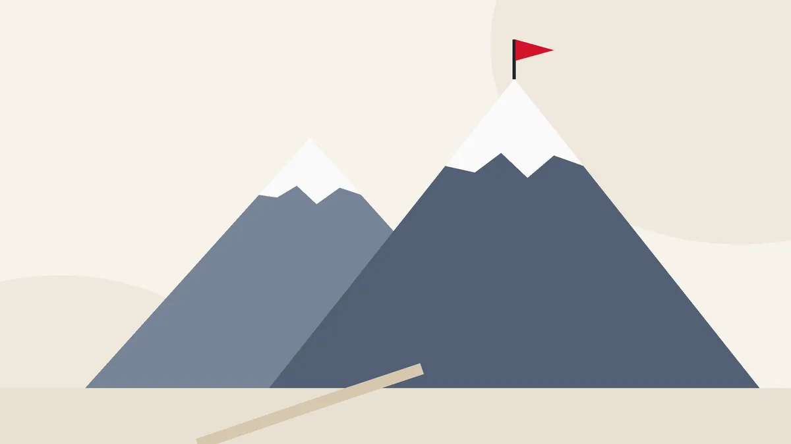
How to Train for a Nepal Trek When You Live Somewhere Flat (8-Week Plan)No hills where you live? An 8-week plan using stairs, an incline treadmill, step-ups and a loaded backpack to get ready for trekking in Nepal.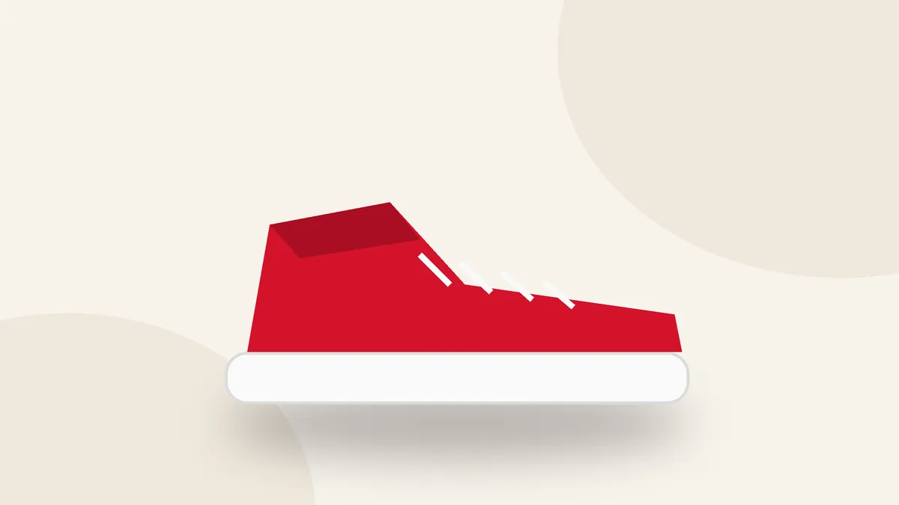
Walking for Weight Loss: How Many Steps a Day Do You Really Need?Is 10,000 steps a day necessary? What research says about daily steps, walking for weight loss, and easy ways to walk more in Nepal.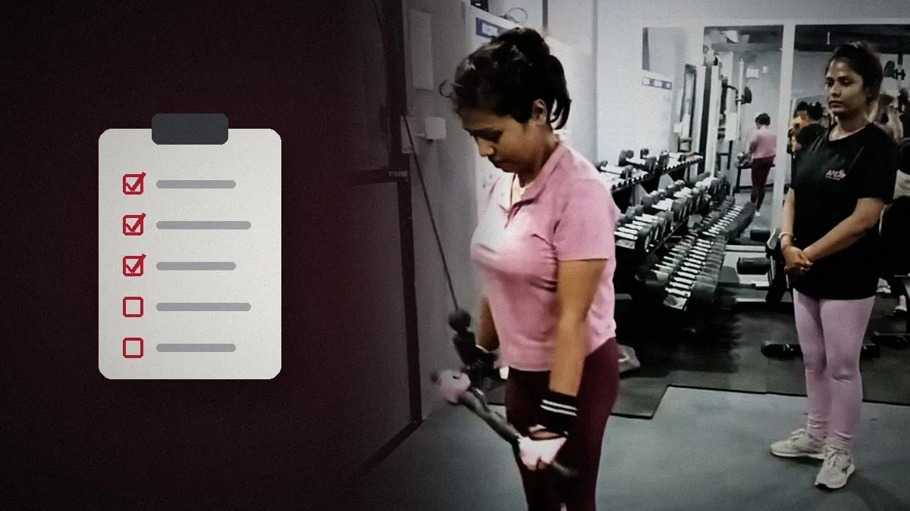
How to Assess Your First Gym Client: A Step-by-Step Guide for Personal TrainersStep-by-step guide for new personal trainers: first consultation, health screening, fitness tests, SMART goals and a safe first workout, plus a checklist. Dal Bhat Protein: How Much Protein Is in One Plate (and How to Get 40 g)A typical plate of dal bhat has about 28 g of protein in 790 calories. See where it comes from, how much you need, and easy ways to reach 40 g at one meal.
Dal Bhat Protein: How Much Protein Is in One Plate (and How to Get 40 g)A typical plate of dal bhat has about 28 g of protein in 790 calories. See where it comes from, how much you need, and easy ways to reach 40 g at one meal.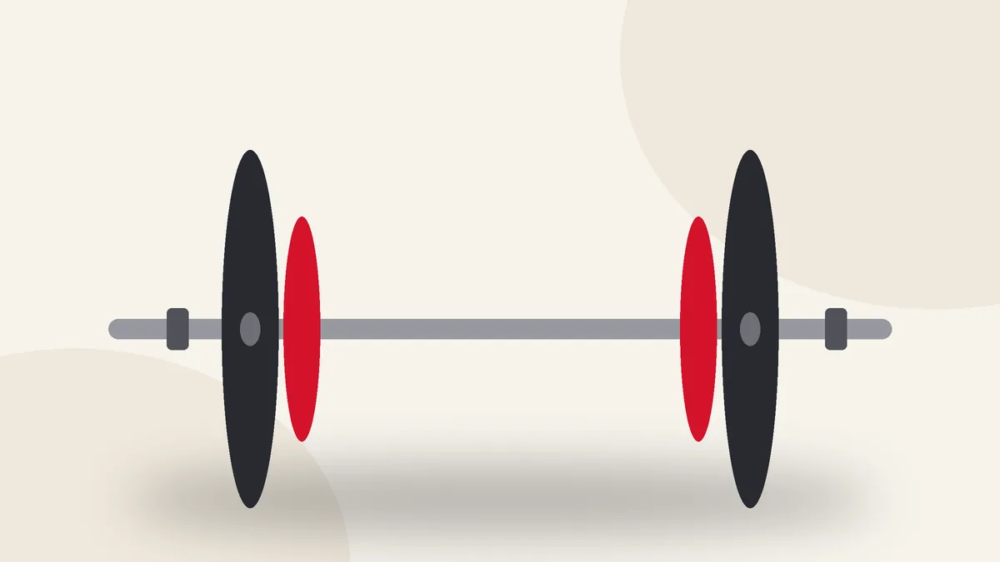
How to Deadlift for Beginners Without Hurting Your BackThe deadlift is safe when done right. Learn the setup, hip hinge, back position, breathing, best beginner variations and the most common mistakes. Roti vs Naan vs Puri vs Paratha: Calories per Piece ComparedCalories per piece: roti 119, puri 140, paratha 258, naan 262. Plus how many calories in 4, 5 and 6 puris, butter naan, and which bread is best for weight loss.
Roti vs Naan vs Puri vs Paratha: Calories per Piece ComparedCalories per piece: roti 119, puri 140, paratha 258, naan 262. Plus how many calories in 4, 5 and 6 puris, butter naan, and which bread is best for weight loss. Wellcore Creatine Review: Dose, Servings and Cost per Day in NepalWellcore creatine (307 g, Rs. 2,000): 3 g per scoop, 83 servings, about Rs. 24 a day. How to take it, how it compares, and how to spot a fake.
Wellcore Creatine Review: Dose, Servings and Cost per Day in NepalWellcore creatine (307 g, Rs. 2,000): 3 g per scoop, 83 servings, about Rs. 24 a day. How to take it, how it compares, and how to spot a fake.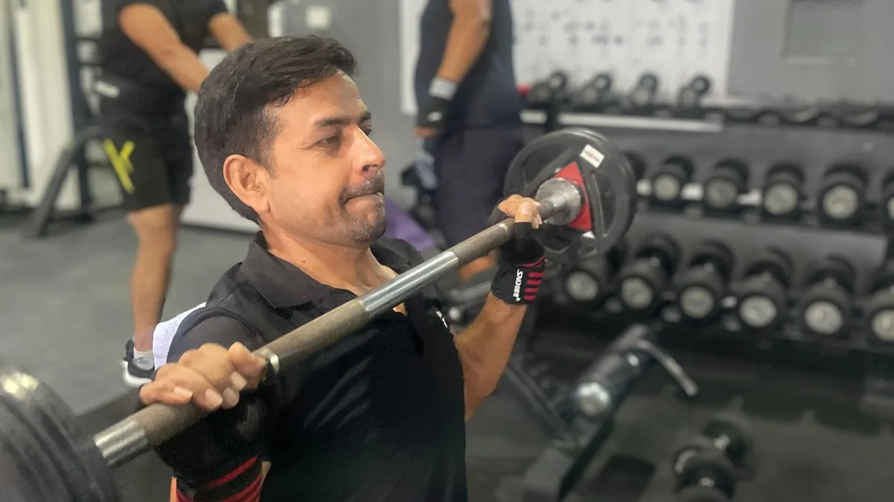
Strength Training on Ozempic, Wegovy or Mounjaro: How to Keep Your MuscleOn a GLP-1 like Ozempic, Wegovy or Mounjaro? Up to half the weight lost can be muscle. A simple strength plan, protein tips and safety advice. Annapurna Circuit Trek: How Fit Do You Need to Be? (Training Guide)Planning the Annapurna Circuit? How hard it really is, what Thorong La Pass demands, an 8-10 week training plan, and practical tips for the long descent.Why You Should Start Going to the Gym (and How to Take the First Step)Thinking about joining a gym? The real benefits, what changes in your first 6 months, the fears that stop most people, and how to start this week.
Annapurna Circuit Trek: How Fit Do You Need to Be? (Training Guide)Planning the Annapurna Circuit? How hard it really is, what Thorong La Pass demands, an 8-10 week training plan, and practical tips for the long descent.Why You Should Start Going to the Gym (and How to Take the First Step)Thinking about joining a gym? The real benefits, what changes in your first 6 months, the fears that stop most people, and how to start this week.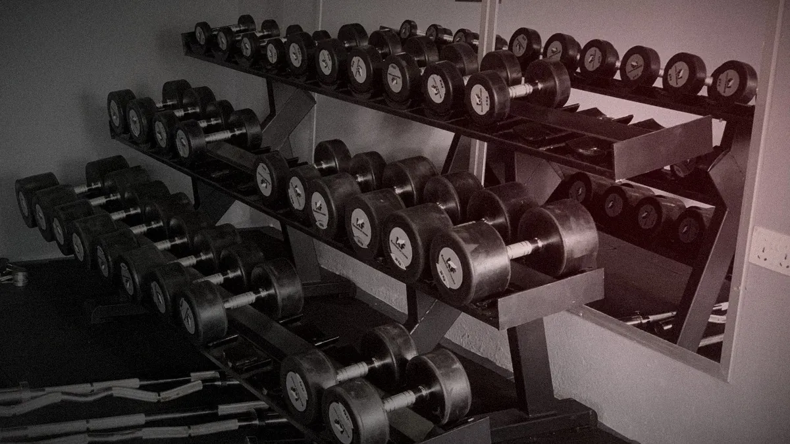
Body Recomposition: How to Lose Fat and Build Muscle at the Same TimeBody recomposition (recomp) means losing fat and building muscle at once. Who it works for, calories, protein, a 3-day training plan and how to track it.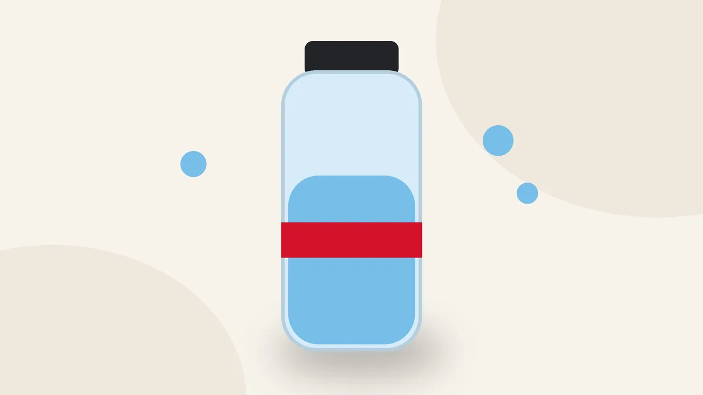
How Much Water Should You Drink a Day (and When You Train)?How much water you need each day, extra for exercise, signs of dehydration, and tips for Nepal's hot summers and dry winters.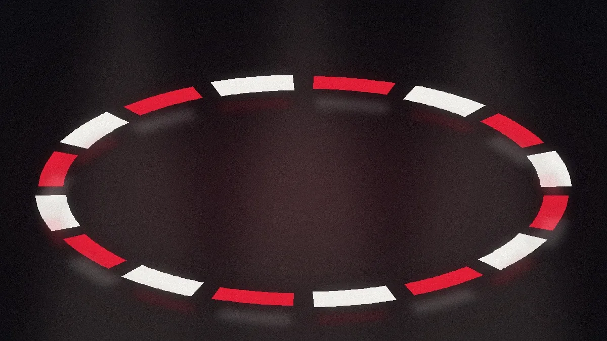
HYROX Training for Beginners: Stations, Weights and a 12-Week PlanWhat is HYROX? The 8 stations, Open weights for men and women, finish times, and a 12-week beginner plan you can train for in any normal gym.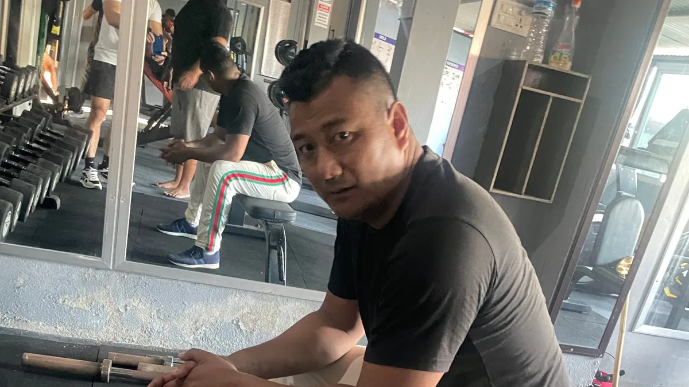
Muscle Soreness After the Gym: Normal Pain vs Injury (and How to Recover)Sore after the gym? Why DOMS happens, how long it lasts, how to recover faster, and the warning signs of a real injury.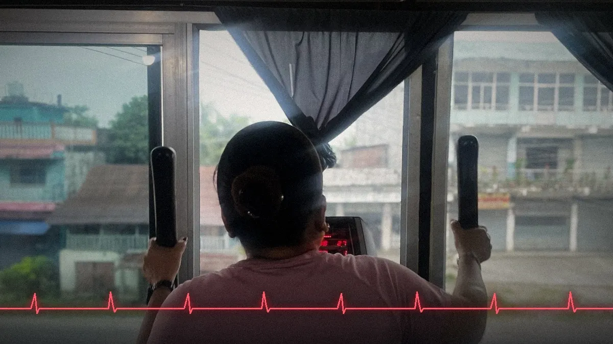
Zone 2 Training: What It Is, Your Heart Rate and How to Do It (Beginner Guide)Zone 2 training explained: how to find your Zone 2 heart rate, the talk test, how many minutes a week, what the science says, and a simple 6-week plan. Creatine for Women: Benefits, Myths, Dose and Is It Safe? (2026 Guide)Creatine for women: what it does for strength, menopause and mood, the right dose (3–5 g a day), the bloating and hair-loss myths, and who should avoid it.
Creatine for Women: Benefits, Myths, Dose and Is It Safe? (2026 Guide)Creatine for women: what it does for strength, menopause and mood, the right dose (3–5 g a day), the bloating and hair-loss myths, and who should avoid it. Creatine vs Whey Protein: Which Should You Buy First?Creatine or whey protein first? What each one does, who needs which, cost per month in Nepal, and whether you should take both together.
Creatine vs Whey Protein: Which Should You Buy First?Creatine or whey protein first? What each one does, who needs which, cost per month in Nepal, and whether you should take both together.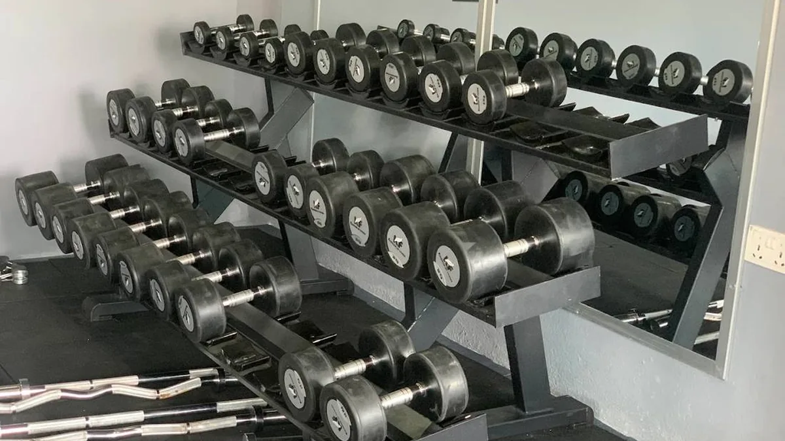
How to Bench Press Safely: Form, Grip, Breathing and Common MistakesLearn the bench press step by step: setup, grip, bar path, breathing, protecting your shoulders, and when to use a spotter.Japanese Walking: The 30-Minute Interval Walk Behind the Viral Trend (How to Do It)Japanese walking is 3 minutes fast, 3 minutes easy, for 30 minutes. What the Shinshu University research found, how to do it right, and a 4-week plan.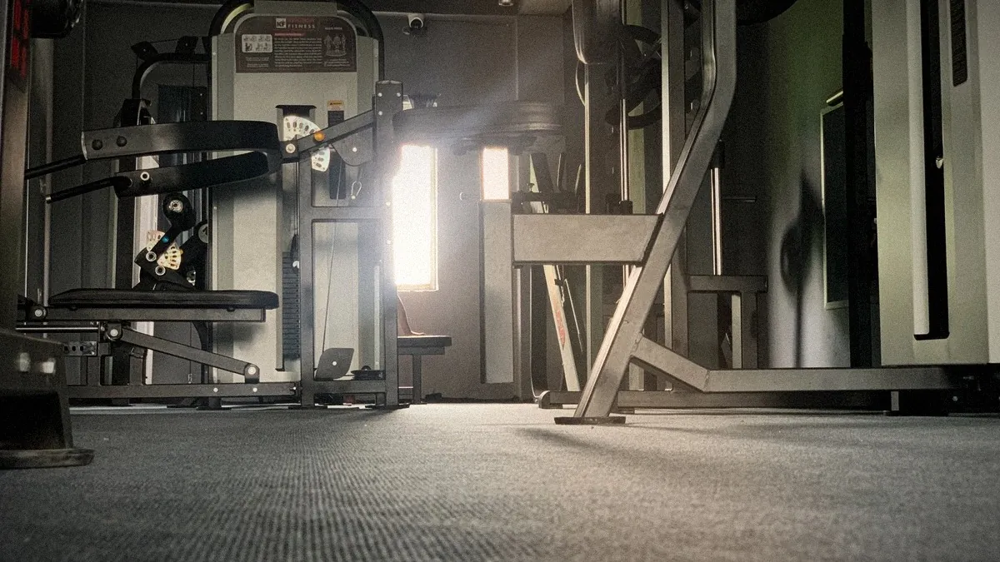
Strength Training After 50: A Safe Beginner Plan to Stay Strong for LifeNever too late to get stronger: why strength training matters after 50, how much you need, the best exercises, a safe first week and mistakes to avoid.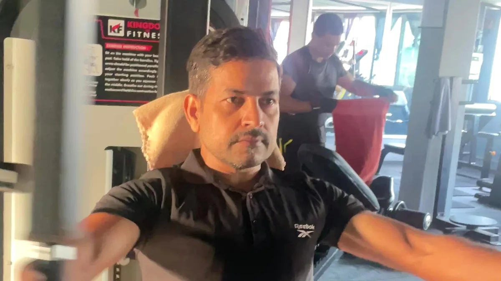
Best Time to Go to the Gym: Morning vs Evening (What Research Says)Is morning or evening better for the gym? What research says about performance, fat loss and sleep, and how to pick the time you can actually stick to. Why Am I Not Losing Weight? 10 Common Reasons (and Fixes)Eating less but the scale won't move? 10 common reasons weight loss stalls, from sugary tea to water weight, and how to fix each.
Why Am I Not Losing Weight? 10 Common Reasons (and Fixes)Eating less but the scale won't move? 10 common reasons weight loss stalls, from sugary tea to water weight, and how to fix each.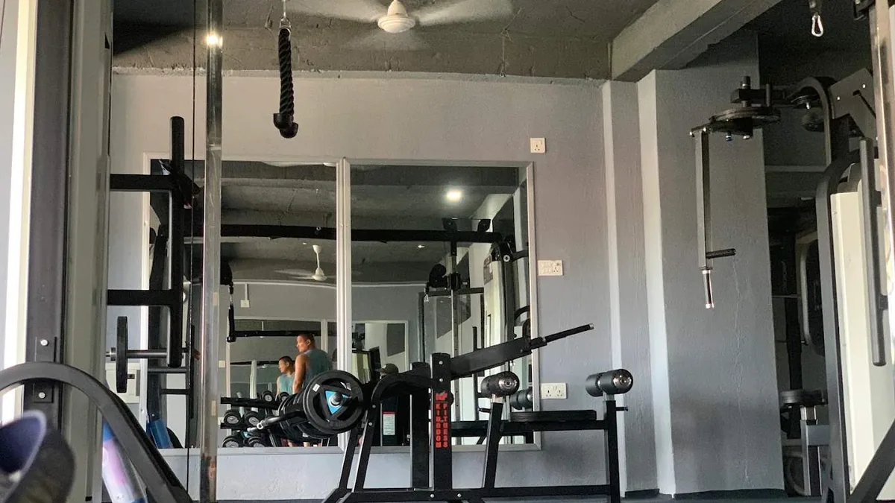
Gym Guide for Women: Your First Visit, What to Train and Common FearsNervous about joining a gym as a woman? What to wear, your first day, a simple workout plan, and honest answers to common fears.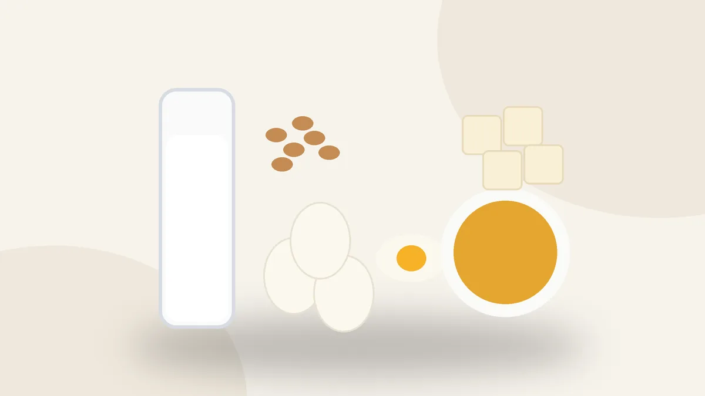
15 Protein-Rich Vegetarian Foods in Nepal (and How Much to Eat)15 protein-rich vegetarian foods you can buy anywhere in Nepal, from paneer and soybean to kwati and peanuts, with amounts. Everest Base Camp Trek Training Plan: How to Get Fit in 12 WeeksHow fit do you need to be for Everest Base Camp? A 12-week plan with hill walks, stairs, strength work and altitude advice.
Everest Base Camp Trek Training Plan: How to Get Fit in 12 WeeksHow fit do you need to be for Everest Base Camp? A 12-week plan with hill walks, stairs, strength work and altitude advice.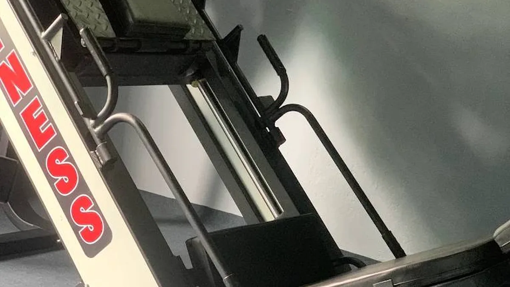
How to Squat Properly: Step-by-Step Form Guide for BeginnersLearn to squat with good form: foot position, depth, knees, back, breathing, common mistakes and fixes, plus easier and harder squat variations.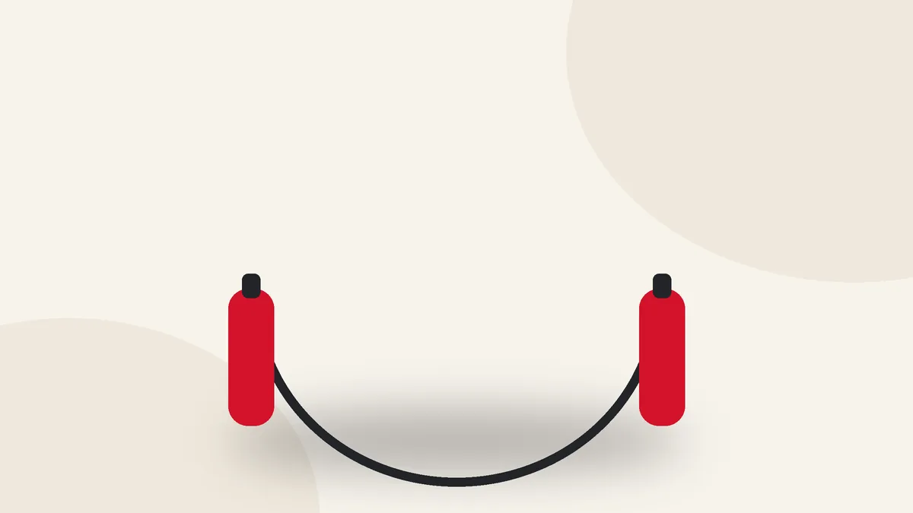
Home Workout Without Equipment: A 30-Minute Plan That Actually WorksNo gym, no weights? A 30-minute bodyweight workout you can do at home in a small room, with beginner and harder versions and a 4-week progression.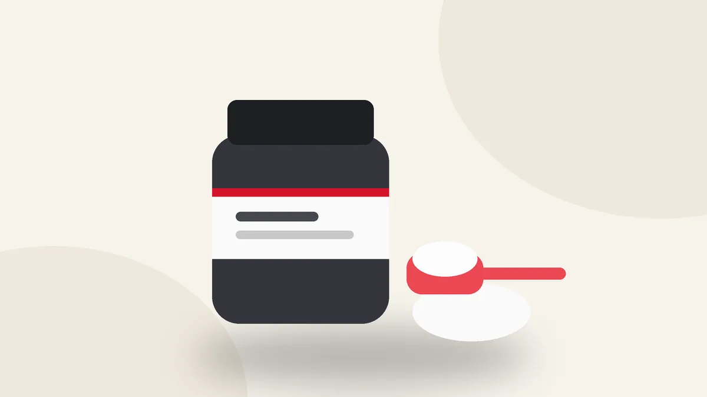
Is Pre-Workout Safe? Caffeine, Side Effects and Who Should Avoid ItIs pre-workout bad for you? How much caffeine is safe, common side effects like tingling and jitters, who should avoid it, and how to use it safely. Beginner Gym Workout Plan: Your First 3 Months (Men and Women)New to the gym? A simple 3-day beginner workout plan for men and women, with exercises, sets and reps, how to progress, rest days and common mistakes.
Beginner Gym Workout Plan: Your First 3 Months (Men and Women)New to the gym? A simple 3-day beginner workout plan for men and women, with exercises, sets and reps, how to progress, rest days and common mistakes.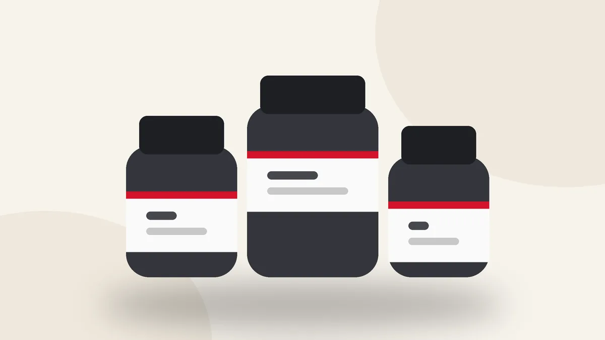
Best Whey Protein in Nepal (2026): How to Choose and What It CostsWhich whey protein to buy in Nepal: concentrate vs isolate vs hydrolyzed, price per kg, protein per scoop, how to avoid fakes, and honest picks by budget. Creatine Side Effects: What Is True and What Is a MythDoes creatine cause hair loss, kidney damage or bloating? What the research really says about creatine side effects, safe dose, and who should avoid it.
Creatine Side Effects: What Is True and What Is a MythDoes creatine cause hair loss, kidney damage or bloating? What the research really says about creatine side effects, safe dose, and who should avoid it.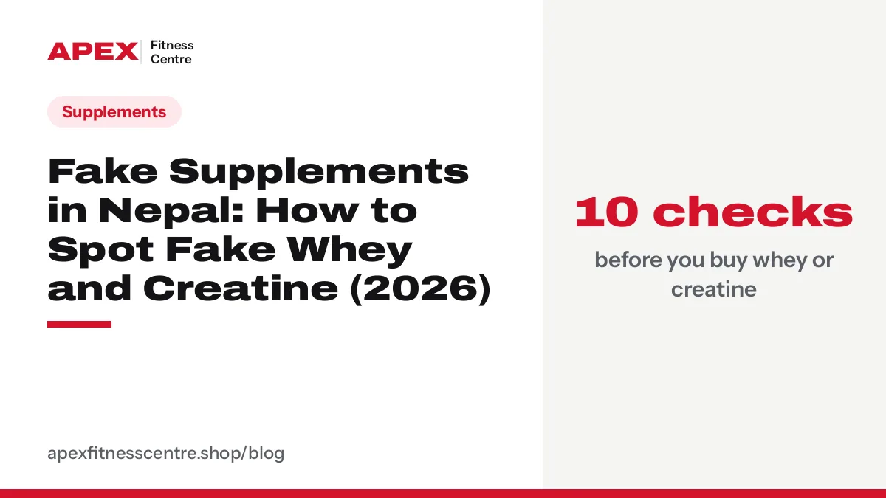
Fake Supplements in Nepal: How to Spot Fake Whey and Creatine (2026)How to check if your whey protein or creatine is original in Nepal: DFTQC rules, label checks, authenticity codes, price red flags and safe places to buy.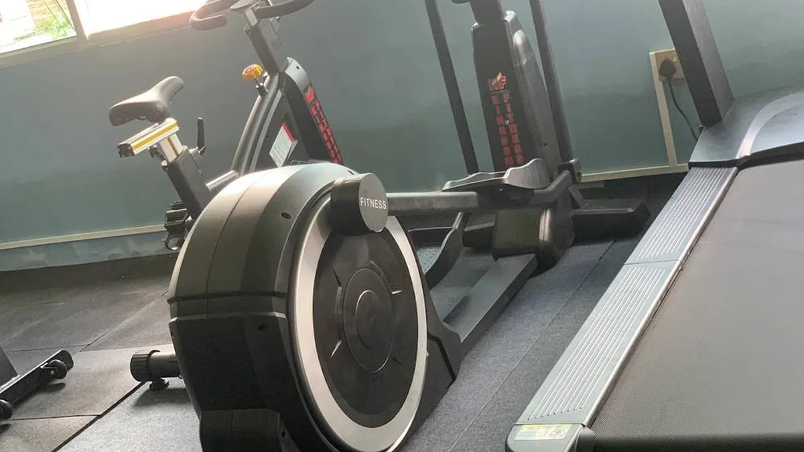
Gym Trainer Jobs in the Gulf for Nepalis: Salary, Certificates and Safe ProcessHow Nepalis get gym trainer jobs in Dubai, Qatar and Saudi Arabia: certificates, real salaries, labour permit steps, costs and avoiding scams. High-Protein Nepali Diet Plan for Muscle Gain (Veg and Non-Veg)A simple Nepali diet plan for muscle gain with dal bhat, eggs, chicken, paneer and soybean. Two full-day menus with about 125 to 140 g of protein.
High-Protein Nepali Diet Plan for Muscle Gain (Veg and Non-Veg)A simple Nepali diet plan for muscle gain with dal bhat, eggs, chicken, paneer and soybean. Two full-day menus with about 125 to 140 g of protein. How Much Protein Do You Need? A Simple Guide for NepalHow much protein to eat if you train, how to get it from dal, eggs, chicken and milk, and when a whey shake actually makes sense.
How Much Protein Do You Need? A Simple Guide for NepalHow much protein to eat if you train, how to get it from dal, eggs, chicken and milk, and when a whey shake actually makes sense. How to Become a Gym Trainer in Nepal (2026): Courses, Fees and SalaryStep-by-step guide to becoming a certified gym trainer in Nepal: which certification to choose, course fees, duration, requirements and real salary ranges.
How to Become a Gym Trainer in Nepal (2026): Courses, Fees and SalaryStep-by-step guide to becoming a certified gym trainer in Nepal: which certification to choose, course fees, duration, requirements and real salary ranges.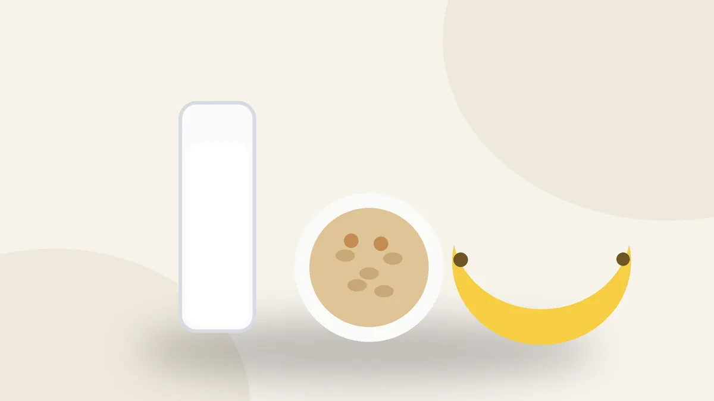
How to Gain Weight Fast (the Healthy Way) If You Are SkinnySkinny and can't gain weight? A practical Nepali food plan: how much extra to eat, calorie-dense foods, a sample day, and training to gain muscle.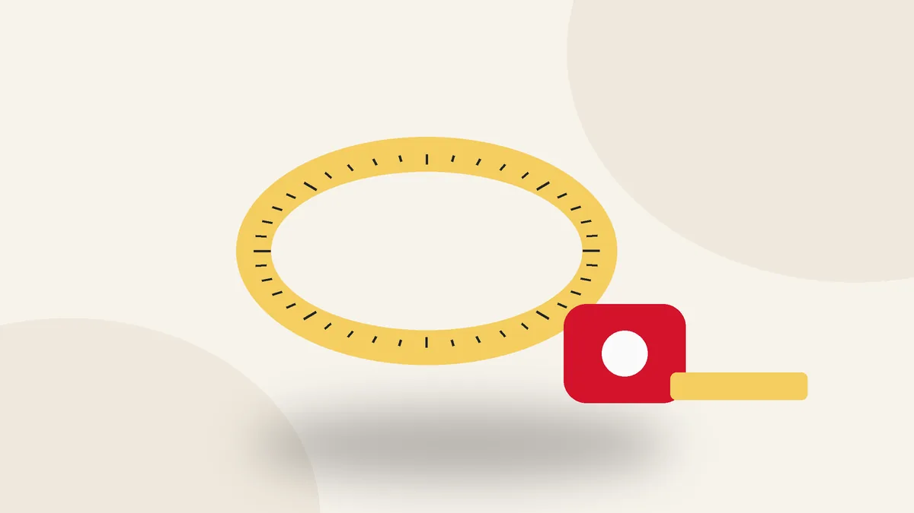
How to Lose Belly Fat: What Actually Works (and What Doesn't)Sit-ups will not burn belly fat. Here is what really reduces belly fat, how to measure your waist, safe targets for South Asians and a simple weekly plan.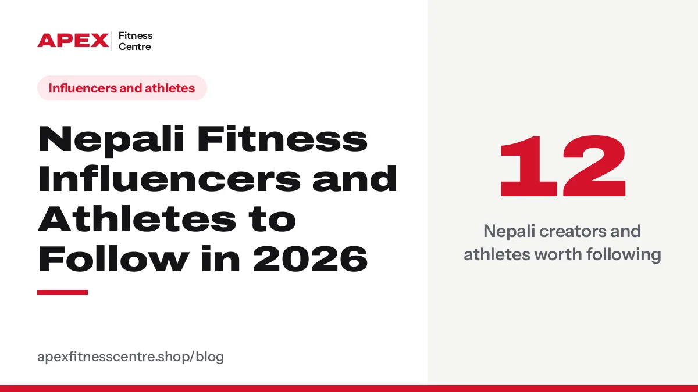
Nepali Fitness Influencers and Athletes to Follow in 2026Nepali fitness creators, coaches, bodybuilders and powerlifters worth following in 2026, from strength coaches to international medal winners. Nepali Diet Plan for Weight Loss: 7-Day Meal Plan with Dal BhatLose weight eating dal bhat: a 7-day Nepali meal plan, the plate method, easy food swaps, a safe speed of loss and the mistakes that stop progress.
Nepali Diet Plan for Weight Loss: 7-Day Meal Plan with Dal BhatLose weight eating dal bhat: a 7-day Nepali meal plan, the plate method, easy food swaps, a safe speed of loss and the mistakes that stop progress.Supplement buying guides
Creatine Price in Nepal 2026: MuscleBlaze vs Wellcore vs BPI – Which to Buy?Creatine price in Nepal 2026: MuscleBlaze and Wellcore Rs. 2,000, BPI Rs. 5,000. Compare servings, how to take it and how to spot fakes.Creatine and whey protein price in Nepal (2026), and how to spot fakesReal creatine and whey protein prices in Nepal from Rs. 2,000, price per gram and per kg, and a simple checklist to spot fake supplements before you pay.Whey protein price in NepalWhey and protein powder prices in Nepal from authorised brands, with size, flavour and price per kg. Free delivery all over Nepal.How to take creatineHow much creatine to take, when to take it, whether to load, and what to expect. A simple, honest guide for beginners.Supplements for beginners in NepalWhat a beginner really needs, what to skip, and the order to buy supplements in Nepal if you are on a budget.How to buy supplements online in Nepal safelyHow to buy supplements online in Nepal without getting fake products: what to check, how payment and delivery work, and how to order from Apex.Pre-workout price in Nepal and how to choose onePre-workout price in Nepal, cost per serving, how much caffeine is safe, who should avoid it, and how to spot a genuine tub.Send supplements to family in Nepal from abroadLiving abroad? Order genuine protein, creatine and other supplements for family in Nepal. Pay directly by bank or Khalti, free delivery all over Nepal.Gym management software price in NepalWhat gym management software costs in Nepal in 2026: monthly plans versus one-time payment, what to check before buying, and a one-time option at Rs. 25,000.How to choose gym management software in NepalA checklist for Nepal gym owners: member tracking, dues, freeze, WhatsApp reminders, backup, staff permissions and price. Pick the right gym software.Excel or notebook vs gym softwareShould a Nepal gym use Excel, a notebook or gym management software? A fair comparison of cost, dues, expiry tracking, reminders and backup.